Layouts & Patterns
레이아웃과
공통 패턴
모든 화면은 공개 레이아웃과 관리자 레이아웃 중 하나를 씁니다. 목록에서 상세, 잠김에서 열림, 빈 상태에서 데이터 표시로 바뀌는 방식을 모든 화면에서 통일했습니다.
- 레이아웃
- 공개 · 관리자
- 화면 폭 검사
- 320–1440px
- 목록
- 20개씩 "더 보기"
- 언어
- 한국어 · 영어
01 / Shells
두 가지 레이아웃
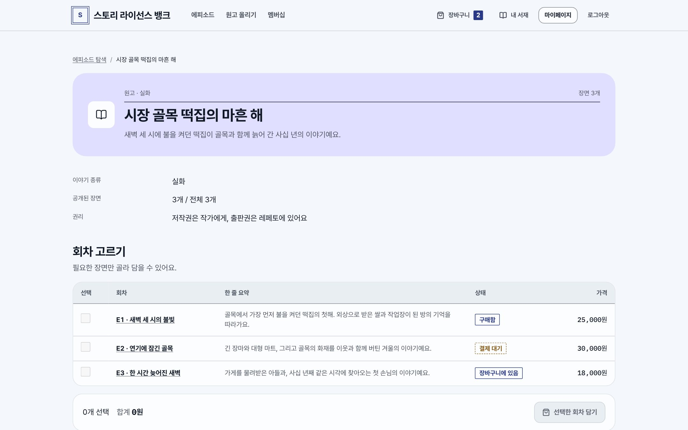
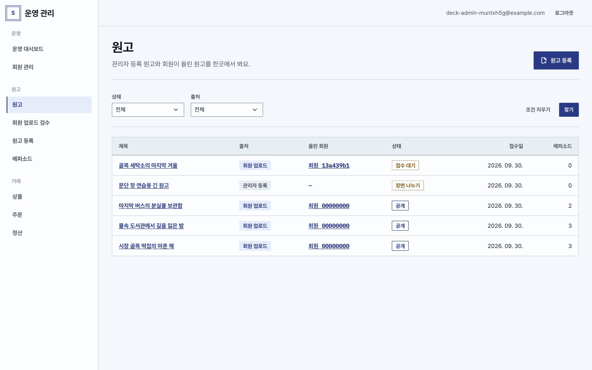
02 / List → Detail
목록과 상세
- 조건셀렉트 박스로 조건을 고르고 찾기·조건 지우기 버튼을 둡니다. 조건은 URL에 남아 공유할 수 있습니다.
- 목록행마다 상태 배지가 붙은 테이블. 20개씩 "더 보기"로 불러오고, 새로 불러온 첫 행으로 포커스를 옮깁니다.
- 상세페이지 타이틀 아래에 섹션 패널을 쌓고, 패널마다 제목과 주요 동작을 하나씩 둡니다.
- 저장저장하면 그 자리에서 값이 바뀌고, 목록은 이미 불러온 행과 포커스 위치를 그대로 유지합니다.

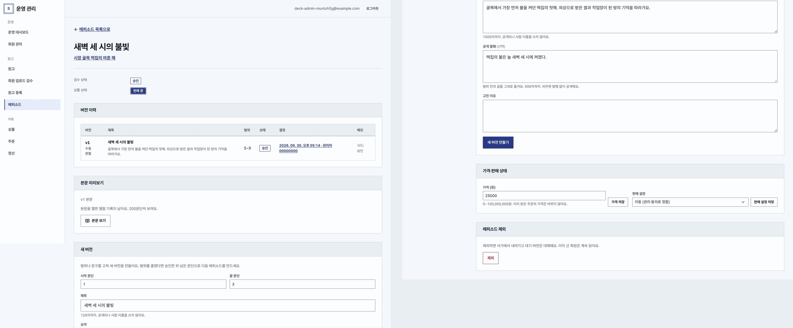
03 / States
상태 패턴
잠김 · 대기 · 없음 · 안내

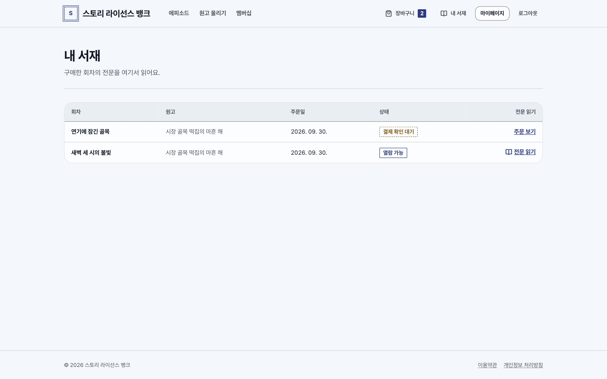
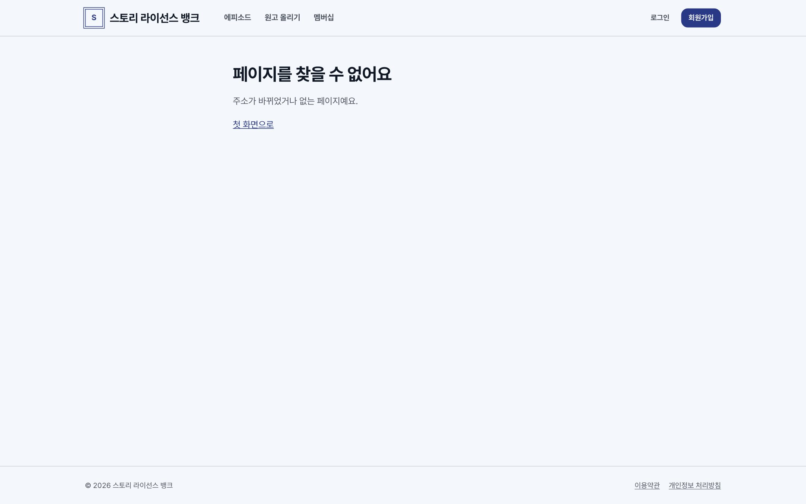
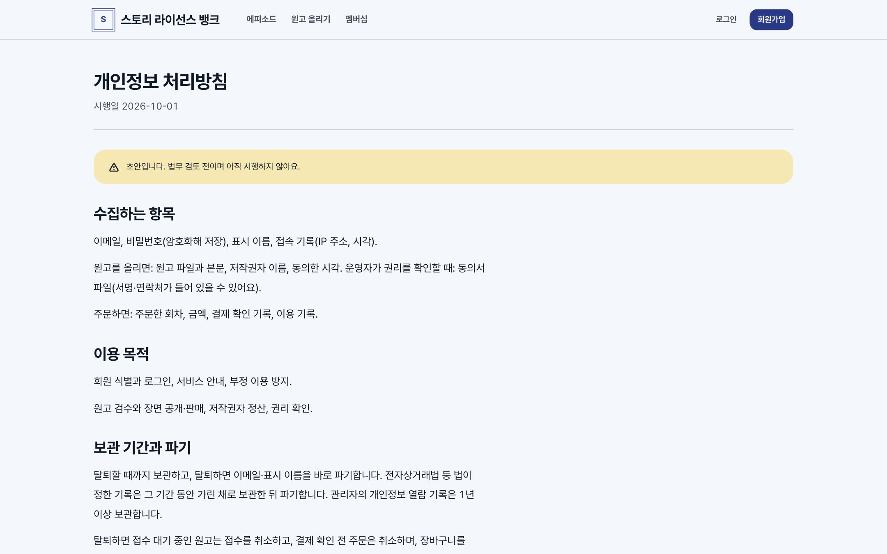
04 / Responsive
모바일
390px 기준
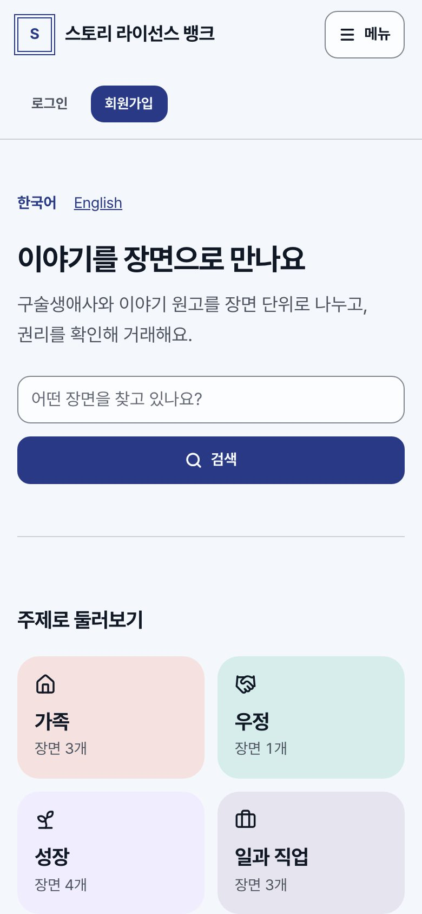

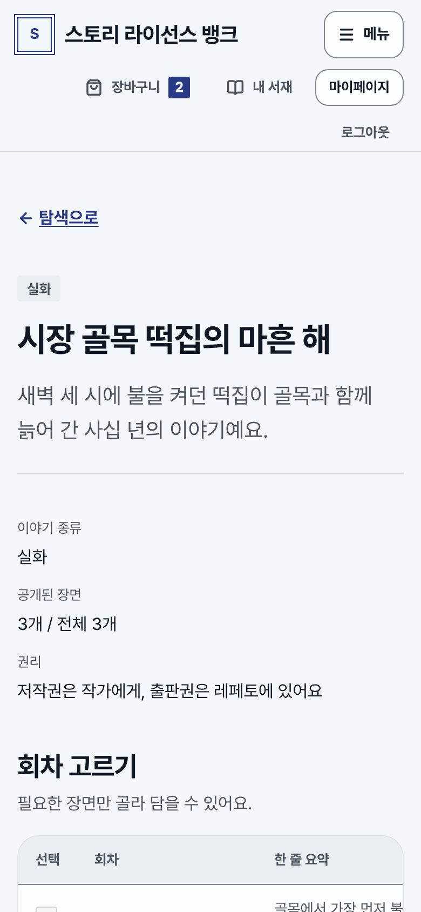
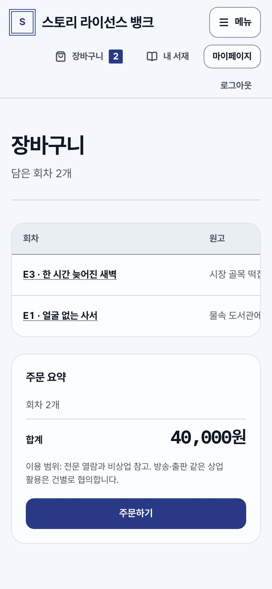
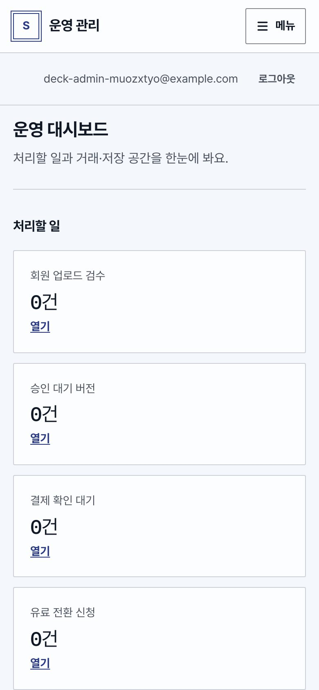
좁은 화면에서는 테이블 영역 안에서만 가로 스크롤이 생기고, 페이지 전체에는 생기지 않습니다. 버튼 텍스트는 어떤 화면 폭에서도 한 줄로 표시합니다.
05 / Locale
다국어
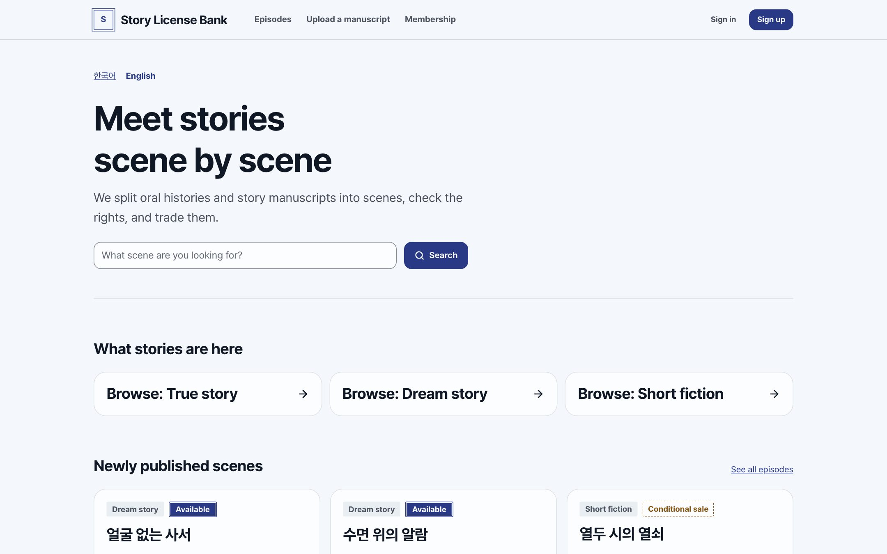
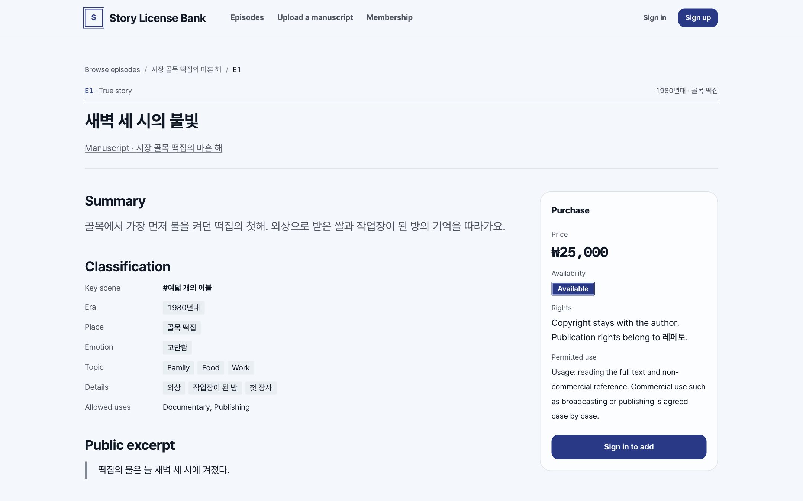